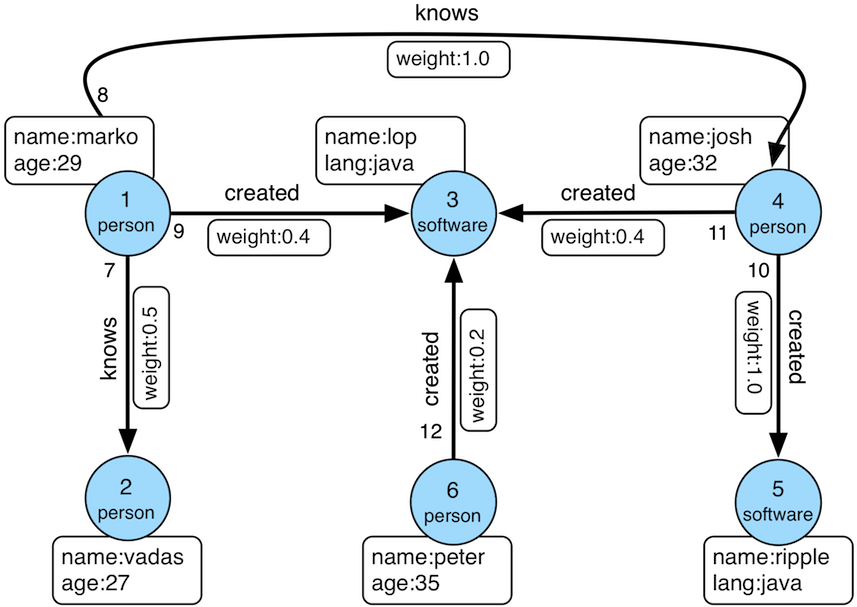

Modern Database Concepts - SS 2021
Prof. Dr.-Ing. Johannes Schildgen
johannes.schildgen@oth-regensburg.de
Exercise Sheet 6 (2021-05-21)
Prof. Dr.-Ing. Johannes Schildgen
johannes.schildgen@oth-regensburg.de
Exercise Sheet 6 (2021-05-21)

In this exercise sheet, you work on the same Pokémon dataset as on exercise sheet 2, but this time you should use MongoDB.
Downlaod and start the Gremlin Console from https://tinkerpop.apache.org/gremlin.html
. graph = TinkerFactory.createModern()g = traversal().withEmbedded(graph)